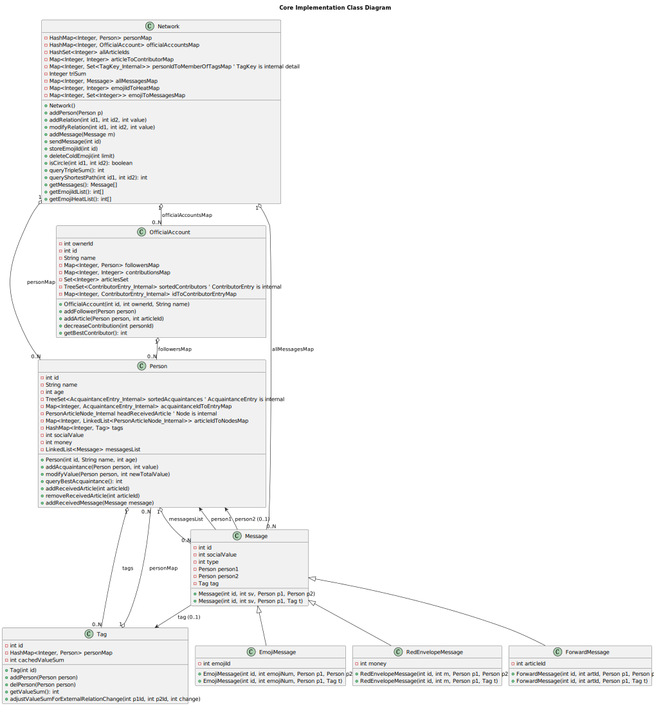

BUAA-OO2025第三单元总结
前言
本月的OO比之前的强度低了一些🤭，但是刚好也是遇到冯如杯的一个月，整体感觉很充实。而我们的面向对象变得相当亲民，提升了我们对算法与数据结构的认知，也让我们了解到了JML规格设计与测试的要点。
一 测试过程
1、对测试类型的理解及在本单元的应用
单元测试 :
单元测试是针对程序中最小的可测试单元（通常是类中的一个方法，或者一个独立的类）进行的测试。目标是验证这个单元在隔离的环境下是否能按预期工作。例如我们本单元为
queryBestAcquaintance设计了很多单元测试用例。这是保证每个组件质量的基础。如果单元都有问题，集成起来必然问题更多。功能测试 :
基于 JML 和指令说明，验证软件的各项功能是否按预期工作。它通常是黑盒测试，不关心内部实现，只关心输入和输出是否匹配规格。
集成测试 :
在单元测试的基础上，将已测试的模块组合起来，测试它们之间的接口和交互是否正确。目标是发现模块间协作时可能出现的问题。通常是自底向上（先测试基础类，再测试依赖它们的类）。
压力测试 :
测试系统在极端负载（大量数据、高并发、长时间运行）下的稳定性和性能。目标是找出系统的瓶颈和在崩溃点。主要有两种测试方法：一是通过构造巨大数据量，如大量
Person或者Relation，提高程序的运行压力；二是通过高频使用复杂的操作，如qts,qcs与qsp。二者都可以一定程度上挑战我们的CTLE，这也正是我们强测所关注的。回归测试:
在对软件进行了修改（Bug修复、功能增强）之后，重新运行之前的测试用例，以确保新的修改没有引入新的错误，或者没有使之前已修复的错误再次出现。
2. 数据构造策略
- 初始阶段 (基本功能实现):
- 简单、直接的有效数据: 构造能触发方法
normal_behavior
的最基本输入。例如，
ap 1 A 20，ap 2 B 20，ar 1 2 10，qv 1 2。 - 边界值 (针对参数):
对于有数值参数的指令，测试其边界值。例如
deleteColdEmoji的 limit 为 0, 1, 恰好等于某个热度, 大于所有热度。modifyRelation的 value 使总值恰好为 0, 1, -1。 - 空状态: 测试对空集合（如空网络、空 Tag、空关注者列表）的操作。
- 单一元素状态: 网络中只有一个人，Tag 中只有一个人等。
- 简单、直接的有效数据: 构造能触发方法
normal_behavior
的最基本输入。例如，
- JML 异常条件覆盖:
- 针对 JML 中每个 signals
子句，精心构造恰好能触发该异常的最小数据集。例如，
addRelation要构造：id1 不存在、id2 不存在、id1 和 id2 已存在关系这三种情况。
- 针对 JML 中每个 signals
子句，精心构造恰好能触发该异常的最小数据集。例如，
- 针对特定逻辑/算法的测试数据:
- 图算法 (
qci,qsp,qts):- 构造不同图结构：链、环、星型、完全图、二分图、不连通图。
- 测试特殊情况：自环路径 (qci 1 1)，查询到自身的距离 (qsp 1 1)。
- ID 优先规则: 构造关系值/贡献度相等，但 ID 不同，需要通过 ID 排序来确定唯一最佳者/贡献者的情况。
- 图算法 (
- 组合与交互测试:
- 构造一系列操作，测试不同功能模块之间的交互。例如：
add_person_to_tag->modify_relation(改变 Tag 内成员关系值) ->query_tag_value_sum。
- 构造一系列操作，测试不同功能模块之间的交互。例如：
- 随机生成与状态跟踪 (DataGenerator):
- 优点: 可以产生大量、多样的测试数据，可能发现手动设计时遗漏的组合。
- 策略:
- 维护内部状态: 生成器内部维护一个简化的网络模型状态（如已存在的 Person ID, Tag ID, Account ID, 文章, 关系等）。
- 基于状态生成有效指令: 尽量生成在当前状态下“有意义”的指令（例如，删除一个已存在的 Tag，而不是随机一个不存在的 Tag ID）。
- 控制指令分布: 使用加权随机或其他策略，确保所有指令（包括新旧、常用和不常用）都有机会被生成。可以调整权重以侧重测试新功能或复杂功能。
- 引入少量错误指令: 故意生成一些会触发 JML exceptional_behavior 的指令，测试异常处理。
- 长指令序列: 生成足够长的指令序列来测试累积效应和长期运行的稳定性。
- “压力块”:
在随机序列中插入一些特定设计的、用于高强度测试某个复杂查询（如
qcs,qbc）的指令子序列，在查询前后进行状态修改。
二 大模型与我们
整体体验感是相当好的，大模型其实几乎能帮助我们做完所有的事情。我在与大模型不断地交流中结合了多种对话方式，包括提出要求、询问建议以及发出质疑，它一般都可以给我不错的答复，这与一两年前的“人工智障”的自我矛盾、死不悔改完全不同了。此外，大模型可以直接根据JML语言生成对应的代码，很大程度上减少了我们在底层代码上的耗时。
那么如何引导大模型在不同场景下完成复杂任务？我的总结归纳如下：
- 清晰定义问题和目标:
- 场景1 (JML 实现): 提供完整的 JML 规格，明确要求“请实现这个方法”。
- 场景2 (Bug 定位): 提供精确的错误信息、相关的代码片段、日志、以及我们认为的预期行为。。
- 场景3 (性能优化): 指出性能瓶颈所在的方法，提供相关代码，明确优化的目标（例如，“将复杂度从 O(N^2) 降到 O(N)以下”等等）。
- 场景4 (测试设计): 明确要测试的功能点、边界条件、以及期望的测试强度。
- 提供充足的上下文信息:
- 相关的 JML 规格: 对于任何涉及接口或方法行为的讨论，JML 都是绝对标准。
- 相关的代码片段: 只给方法签名通常不够，我们需要提供相关的实现逻辑。
- 数据结构定义: 当讨论到 Map、List、Set 或自定义数据结构时，明确其 Key-Value 类型和用途。
- 采用迭代和交互的方式:
- 不要期望一次完美。 把复杂任务分解成小步骤，逐步推进，ai在直面复杂任务的时候能力也很有限。
- 对模型回答进行追问和质疑。 大模型有时候的回复不一定准确无误，不可盲信！！这要求我们对他们的输出运用批判性思维。我们需要利用，而不是依靠。
- 主导方向，利用模型作为辅助工具:
- 我们是项目的主人。 我们对整体架构、核心难点有更深的理解。利用模型来完成具体的代码生成、逻辑分析、信息检索等任务，而不是直接把所有事情都交给它。
- 提出假设，让模型验证或提供实现。 例如我们想用TreeSet存储数据以提高性能，我们可以提出并询问它是否有可行性，是否有可观的提升。
- 当模型给出多个选项时，我们来做决策。 例如，关于增量开发或缓存策略，大模型可能给出几种方案及其优缺点，最终选择权在我们手里。
三 架构设计
1、UML类图

2、图模型组成
- 核心社交网络图: 主要通过 Network 类中的
personMap（存储 Person 节点）和 Person 类内部的sortedAcquaintances (TreeSet)及acquaintanceIdToEntryMap（存储熟人关系边及其权重）来构建。addPerson指令添加节点，addRelation和modifyRelation指令构建和修改边。 - Tag-Person 成员关系图: Person 对象通过其内部的
tags Map持有它拥有的 Tag 对象。Tag 对象通过其内部的personMap记录它的成员 Person。Network 类还维护一个反向索引personIdToMemberOfTagsMap，用于记录一个 Person 作为成员出现在哪些具体的 Tag 实例中，方便在关系变化时更新相关的 Tag 状态。 - OfficialAccount 关注与贡献图: OfficialAccount
类内部通过
followersMap构建关注关系，并通过contributionsMap和sortedContributors (TreeSet)记录和管理关注者的贡献度及最佳贡献者。 - 消息与实体关联: 通过 Network 中的
allMessagesMap存储所有消息。Person 的messagesList记录其接收到的消息。Network 的articleToContributorMap和emojiToMessagesMap分别将文章和 Emoji 与相关的 Person 或 Message 关联起来，用于特定功能的实现和优化。 - 辅助图算法的输入:
GraphAlgorithms类直接接收 Network 的personMap作为其操作图结构的输入，用于执行如路径查找、连通性判断和三元环计数等算法。
3、维护策略
- 直接存储与索引: 对 Person、OfficialAccount、全局
Message、全局 Emoji 使用
HashMap进行 ID 到对象的直接存储和快速查找。 - 有序集合优化查询: 在 Person（最佳熟人）和
OfficialAccount（最佳贡献者）内部使用
TreeSet来自动维护排序，使得相关查询非常高效。 - 反向索引:
Network.personIdToMemberOfTagsMap: 用于在关系变化时快速定位受影响的 Tag，用于优化qtvs。Network.emojiToMessagesMap: 用于在删除冷门 Emoji 时快速定位并删除相关的消息。
- 增量更新缓存:
Tag.getValueSum与Network.triSum等复杂的query对象采用增量更新策略，以避免大量查询导致CTLE。
四 出现的性能问题与修复情况
Person.queryBestAcquaintance():- 初始问题: 如果每次调用都遍历所有熟人 (O(degree))，在 Network.queryCoupleSum() (O(N) 次调用) 中会导致整体 O(N * degree) 甚至 O(N^2) 的复杂度，容易超时。
- 第一次迭代优化 (手动缓存): 我们引入了
bestAcquaintanceId,
bestAcquaintanceValue, isValid
手动缓存。
- 优点: 缓存命中时 O(1)。
- 不足: 缓存更新逻辑（特别是 addAcquaintance 和 modifyValue 中值变小或删除最佳者时）复杂且容易出错，如果频繁失效导致重算 (O(degree))，性能仍然不稳定。。
- 第二次迭代优化 (TreeSet): 最终方案是使用
TreeSet
(配合辅助 Map acquaintanceIdToEntryMap) 来自动维护熟人的排序。 - 修复效果:
queryBestAcquaintance变为 O(log degree) 或 O(1) (取 TreeSet.first())。addAcquaintance和modifyValue的复杂度也稳定在 O(log degree)。这显著提升了依赖此方法的queryCoupleSum的性能。
- 修复效果:
Network.queryCoupleSum():- 初始问题: 如果采用朴素的双重循环遍历所有 Person 对 (O(N^2))，并且内部调用未优化的 queryBestAcquaintance (O(degree))，则总复杂度可能高达 O(N^2 * degree) 或 O(N^3)。
- 第一次迭代优化 (算法层面): 将双重循环改为单层循环遍历 Person i -> 找 best(i)=j -> 找 best(j)=k -> 比较 k==i。
- 结合 Person 的 TreeSet 优化: 如第一点所述。
Person.removeReceivedArticle(int articleId)(在 Network.deleteArticle 中被调用):- 初始问题: 如果 Person 的
receivedArticles使用 LinkedList实现，那么 removeFirstOccurrence或removeIf来删除（所有）匹配项的复杂度是 O(L) (L 为列表长度)。在Network.deleteArticle 中，遍历 F 个关注者，每个都执行 O(L) 操作，导致通知部分为 O(F*L)，可能超时。 - 迭代优化 (自定义双向链表 + Map 索引):
我们设计了使用 Map<Integer, LinkedList
> articleIdToNodesMap配合自定义双向链表节点 Node 的方案。- addReceivedArticle 保持 O(1)。
- removeReceivedArticle (删除所有匹配项) 的复杂度优化为 O(K)，K 是特定 articleId 的重复次数。这在 K 远小于 L 时是显著的优化。
- 修复效果:
Network.deleteArticle通知部分的复杂度从 O(F·L) 改善为 O(F·K_avg)，平均情况下 K_avg 通常较小。
- 初始问题: 如果 Person 的
Tag.getValueSum():- 初始问题: 每次调用都进行 O(S^2) 的双重循环计算 (S
为 Tag 内人数)，在
queryTagValueSum被频繁调用时会超时。 - 迭代优化 (增量缓存 + Network 通知):
- Tag 内部维护
cachedValueSum。 - Tag.addPerson 和 Tag.delPerson 进行 O(S) 的增量更新
cachedValueSum。 - Network.addRelation 和 Network.modifyRelation 负责找到受影响的 Tag
(那些同时包含关系双方的 Tag)，并调用 Tag 新增的
adjustValueSumForExternalRelationChange(p1Id, p2Id, valueChange)方法，该方法对cachedValueSum进行 O(1) 的调整。 - 修复效果: Tag.getValueSum() 变为 O(1) 查询。代价是 addPerson/delPerson 变为 O(S)，addRelation/modifyRelation 需要额外的逻辑来查找和通知 Tag。
- Tag 内部维护
- 初始问题: 每次调用都进行 O(S^2) 的双重循环计算 (S
为 Tag 内人数)，在
Network.queryTripleSum():- 初始问题: 最初的实现是 O(N^3) 或 O(N^2 * degree)，这是非常高的复杂度，极易超时。
- 优化方向: 遍历节点再遍历其邻居对 (O(N *
avg_degree^2))，并且对
triSum进行增量更新。
Network.isCircle()和Network.queryShortestPath():- 当前实现: 单向 BFS，复杂度 O(N+M)。
- 优化方向 : 双向 BFS 可以显著改善实际运行时间（常数因子），但最坏复杂度不变。对于无权图，BFS 已是较优算法，因此没有使用双向BFS。
五 规格与实现分离
规格与实现分离是软件工程中的核心原则，旨在提高代码的模块化、可维护性、可测试性和可重用性。通过这个单元的学习，我对这个原则有了更具体的体会：
- 接口 (JML 规格) 定义了“做什么” :
- JML 规格扮演了契约的角色。它精确地定义了一个组件应该提供的功能、它能接受的输入（requires）、它保证产生的输出或状态改变（ensures）、它可能修改的状态（assignable）以及它在异常情况下应该如何表现（signals）。
- 当我们严格对照 JML 来设计和 Debug 时（比如 deleteArticle 的异常顺序，红包消息的 socialValue 计算），思路会更清晰，也更容易发现与JML不符的地方。
- 实现定义了“怎么做” :
- 我们需要实现的类则关注如何高效、正确地达成 JML 规定的目标。我们可以自由选择内部数据结构和算法，只要最终的外部行为符合 JML 即可。
- 这种分离给了我们优化的空间，也是我们这个单元主要考察内容之一吧。当我们发现
queryBestAcquaintance性能不足时，我们可以只修改 Person 类的内部实现（从手动缓存到 TreeSet），而不需要修改 JML 规格。
- 分离带来的好处:
- 模块化: 基于JML每个组件可以独立开发和测试。我们对 Person 进行单元测试，确保其缓存正确，然后再集成到 Network 中。
- 可维护性: 修改一个组件的内部实现（例如优化算法）不应该影响到其他依赖其接口的组件。
- 可测试性:
- 单元测试: 可以针对实现类进行白盒测试，验证其内部逻辑。
- 基于接口的测试/功能测试: 可以只依赖接口和 JML 编写测试用例，验证任何符合该接口的实现是否都表现正确。
六 规格与Junit
1、利用规格设计实现Junit测试
- 测试正常行为 (normal_behavior):
- 根据 requires 子句构造有效输入: JML 的 requires 子句定义了方法正常执行的前提条件。测试时，应构造满足这些前提条件的输入数据和对象状态。
- 根据 ensures 子句验证输出和状态变化: JML 的 ensures 子句描述了方法成功执行后必须达成的状态或返回结果。JUnit 的断言 (assertEquals, assertTrue, assertFalse 等) 就应该用来验证这些后置条件。
- 考虑边界值和等价类: 即使 JML 没有明确列出所有边界，但基于 requires 中的条件，可以推断出参数的有效范围和边界情况。
- 测试异常行为 (exceptional_behavior):
- 根据 signals (或 signals_only) 子句构造触发异常的输入: JML 的 signals 子句定义了在何种条件下方法应该抛出何种异常。测试时，应精确构造这些条件。
- 使用 JUnit4 的异常测试机制验证异常类型和内容。
- 测试异常的优先级: 如果 JML 定义了多个 exceptional_behavior 块，它们的顺序通常表明了检查和抛出异常的优先级。测试用例应该尝试验证这种优先级。
- 测试不变式 (invariant):
- 不变式定义了对象在任何稳定状态下都必须满足的属性。所有会修改对象状态的非构造方法，在执行完毕后，对象都必须仍然满足其不变式。构造方法执行完毕后，对象必须满足不变式。
- 测试策略: 在调用了那些会修改对象状态的 public 方法之后，设计断言来检查对象是否仍然符合其类 JML 中定义的不变式。
- 测试 assignable (可修改项) 和 pure 约束:
- assignable 或 /*@ pure @*/:
这些方法不应修改任何可观察状态。
- 测试策略: 二者都需要利用深拷贝验证对象是否完全没有改变。
- assignable
; : 这些方法只允许修改指定的模型字段。- 测试策略: 除了验证 ensures 子句描述的状态变化确实发生外，还要验证未被列在 assignable 中的状态确实没有改变。这通常与 pure 方法的测试类似，需要深克隆比较调用前后的状态。
- assignable 或 /*@ pure @*/:
这些方法不应修改任何可观察状态。
2、JUnit 测试检验代码实现与规格的一致性
JUnit 测试是验证代码实现是否符合 JML 规格的重要手段，其优势效果明显：
- 自动化验证: JUnit 可以自动化地执行大量测试用例，快速反馈代码是否符合预期。
- 早期发现错误: 在开发早期阶段通过单元测试发现问题，避免强测凉掉（×。
- 精确的问题定位: 良好的单元测试可以帮助快速定位到出错的具体方法或逻辑。
- 回归保证: 一旦为某个 Bug 编写了测试用例，或者为某个功能点编写了测试，这些测试就可以在后续修改中持续运行，确保 Bug 不会重现，功能不被破坏。
- 促进对规格的理解: 编写 JUnit 测试的过程本身就是一个“强迫”开发者仔细阅读和理解 JML 规格的过程。为了写出好的测试，必须清楚方法的前提、后置、异常等。
七 学习体会
OO是一门内容丰富且多元的课程，第三单元也给我们带来了前所未有的学习体验。一句规格化设计涵盖了许多需要我们在实操中慢慢体悟的细节。JML规格像是一份指导书，或者说是一份严谨的要求，像一个深入项目结构的甲方，很大程度上提升了我们编写代码的确定性与效率。
而随着作业的迭代，一次次CTLE后再优化，让我对规格与实现分离有了更深的理解，规格接口定义了我们要做什么，而怎么做、怎么做得更好，是由我们开发者考虑的。严丝合缝的规格设定与自由自在的设计实现，这二者相辅相成，让人更加感受到了项目开发的魅力~
后记
这几周的学习强度变化太大，笔者决定要开始自律的一周啦！疑似上个周末玩的太嗨了，学习强度不太高的情况下，我们一定要优先保证睡眠与锻炼的时间呀😊，别让学习耽误了健康的身体，很喜欢沃兹基硕德的一句话：不学习一辈子白过，只学习活不了一辈子
本期总结就到这里！感谢你看到这里~我们下期再见！👋
If you like this blog or find it useful for you, you are welcome to comment on it. You are also welcome to share this blog, so that more people can participate in it. If the images used in the blog infringe your copyright, please contact the author to delete them. Thank you !